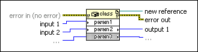

Constructor Node
Owning Palette: .NET Functions
Requires: Base Development System (Windows)
Creates an instance of a .NET object. This node identifies the constructor from which to create a .NET object.

 Add to the block diagram Add to the block diagram |
 Find on the palette Find on the palette |